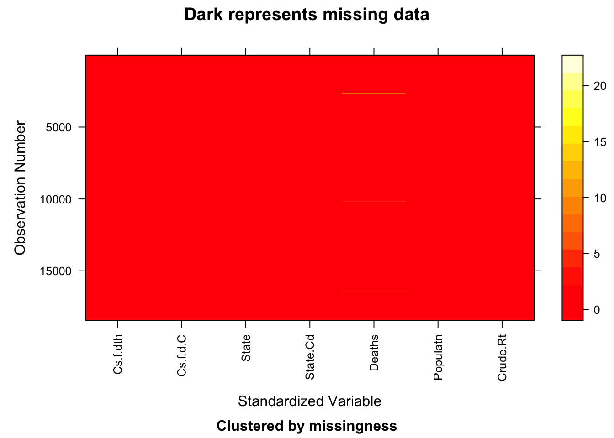
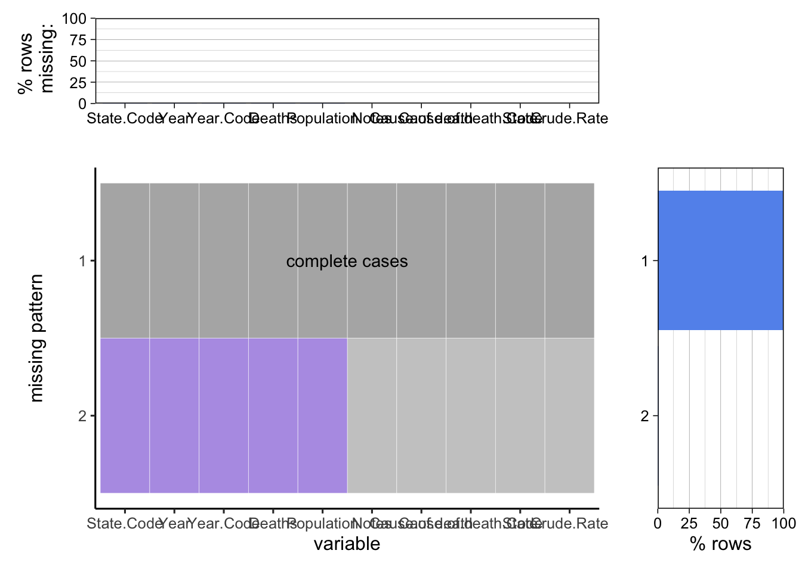

Chapter 4 Missing values
## NOTE: The following pairs of variables appear to have the same missingness pattern.
## Please verify whether they are in fact logically distinct variables.
## [,1] [,2]
## [1,] "Cause.of.death" "Cause.of.death.Code"
## [2,] "Cause.of.death" "State"
## [3,] "Cause.of.death" "State.Code"
## [4,] "Cause.of.death" "Year"
## [5,] "Cause.of.death" "Year.Code"
## [6,] "Cause.of.death" "Deaths"
## [7,] "Cause.of.death" "Population"
## [8,] "Cause.of.death" "Crude.Rate"
## [9,] "Cause.of.death.Code" "State"
## [10,] "Cause.of.death.Code" "State.Code"
## [11,] "Cause.of.death.Code" "Year"
## [12,] "Cause.of.death.Code" "Year.Code"
## [13,] "Cause.of.death.Code" "Deaths"
## [14,] "Cause.of.death.Code" "Population"
## [15,] "Cause.of.death.Code" "Crude.Rate"
## [16,] "State" "State.Code"
## [17,] "State" "Year"
## [18,] "State" "Year.Code"
## [19,] "State" "Deaths"
## [20,] "State" "Population"
## [21,] "State" "Crude.Rate"
## [22,] "State.Code" "Year"
## [23,] "State.Code" "Year.Code"
## [24,] "State.Code" "Deaths"
## [25,] "State.Code" "Population"
## [26,] "State.Code" "Crude.Rate"
## [27,] "Year" "Year.Code"
## [28,] "Year" "Deaths"
## [29,] "Year" "Population"
## [30,] "Year" "Crude.Rate"
## [31,] "Year.Code" "Deaths"
## [32,] "Year.Code" "Population"
## [33,] "Year.Code" "Crude.Rate"
## [34,] "Deaths" "Population"
## [35,] "Deaths" "Crude.Rate"
## [36,] "Population" "Crude.Rate"